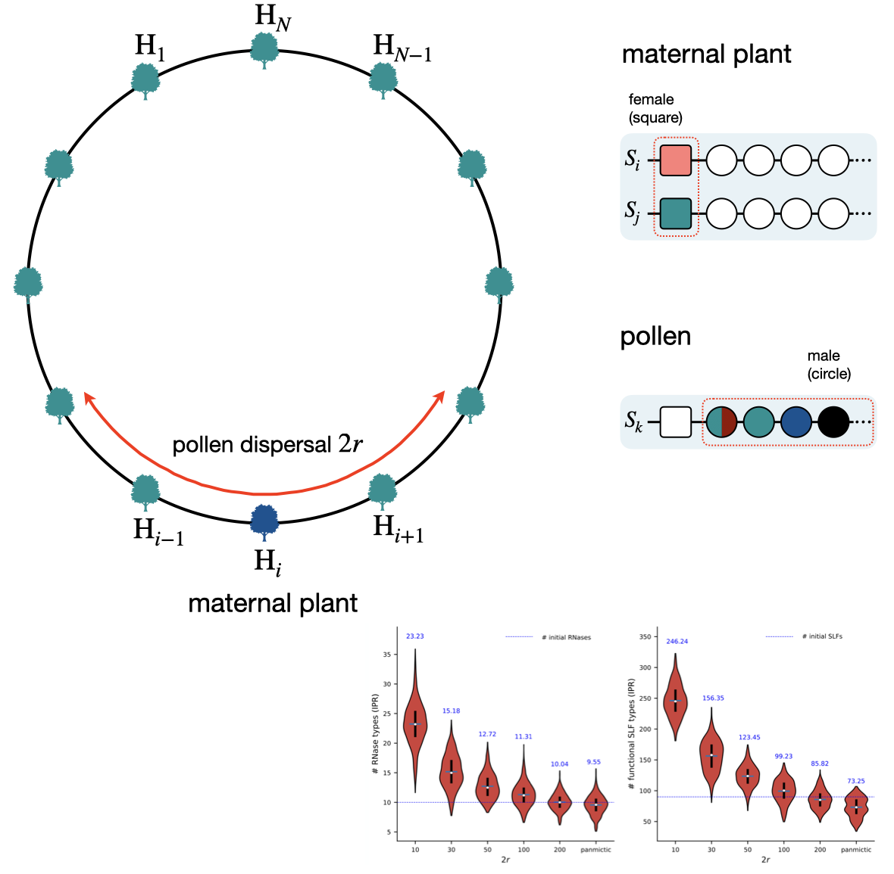
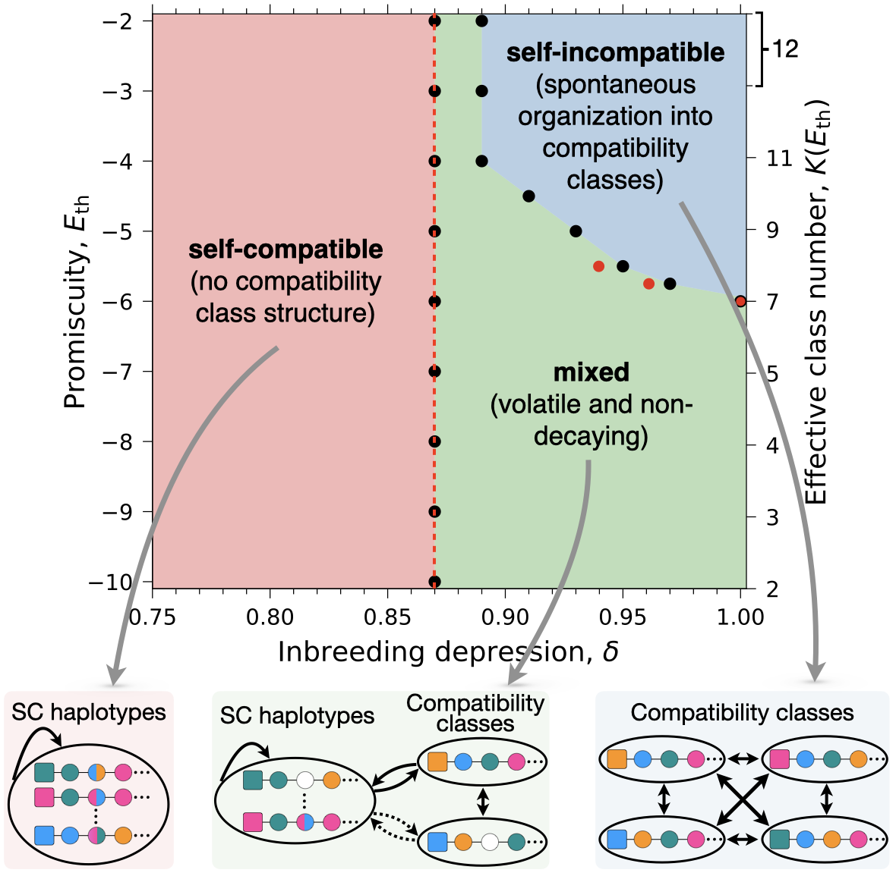
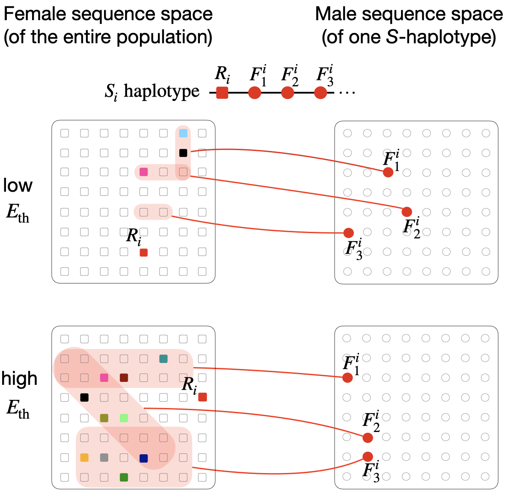
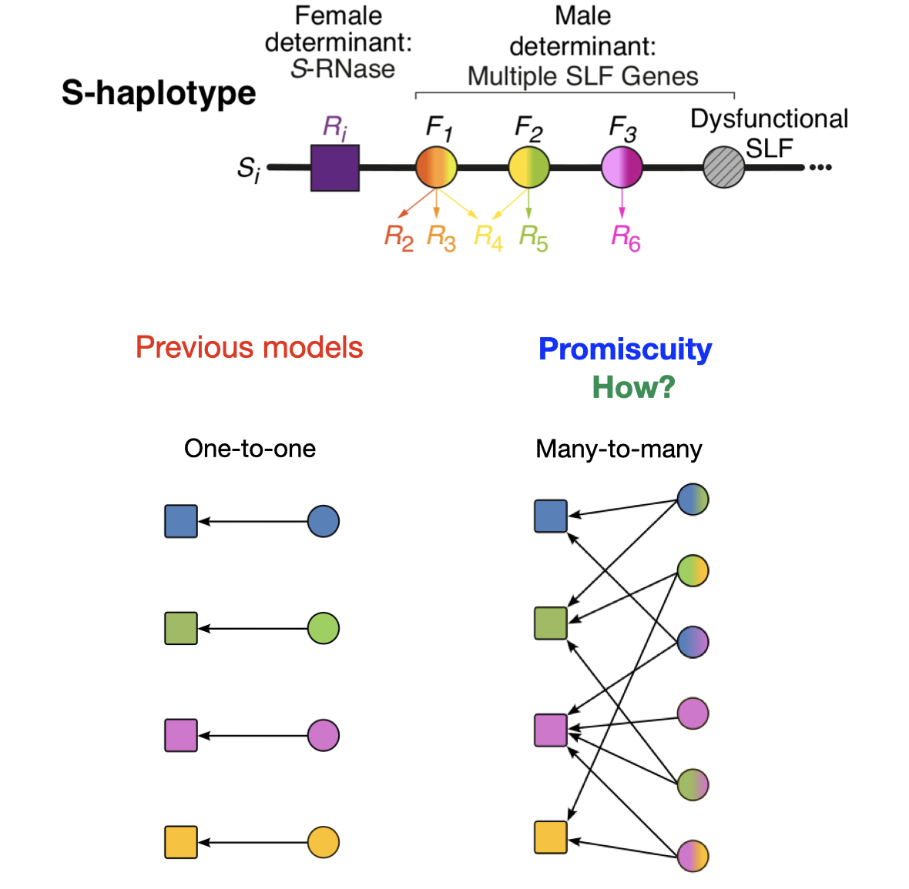
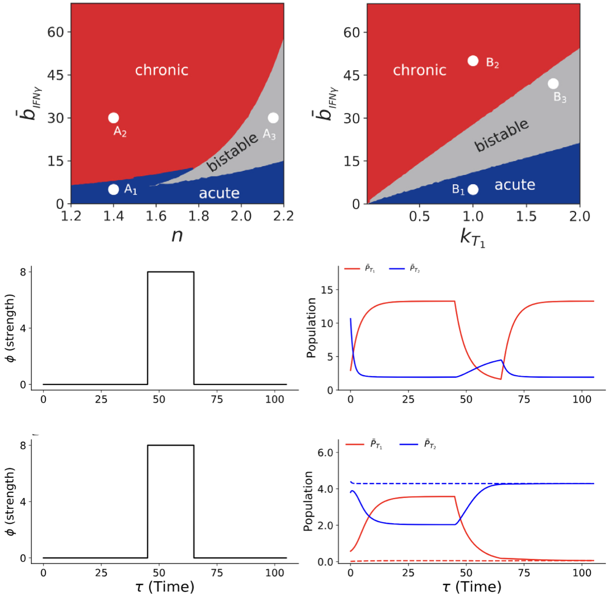
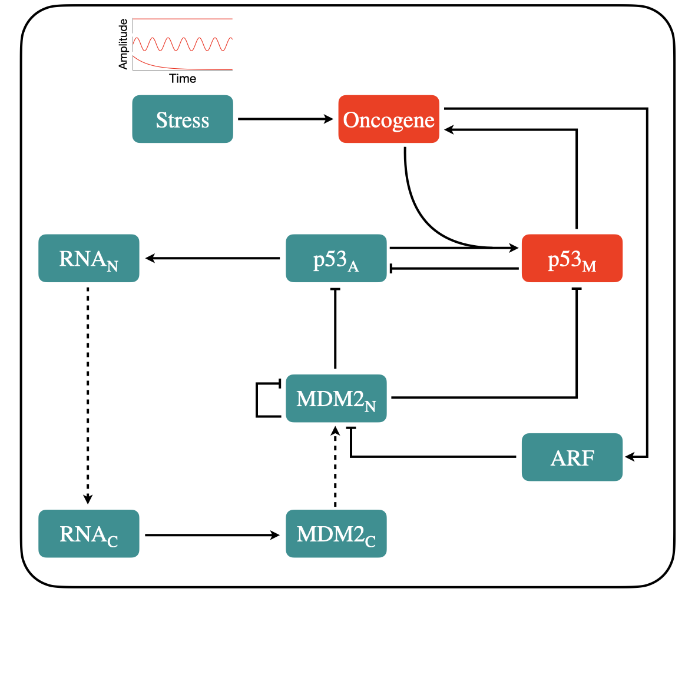
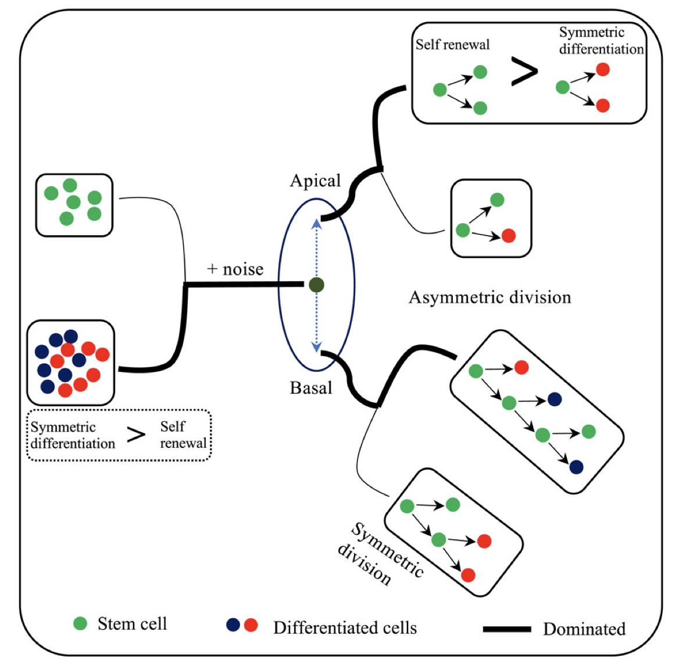
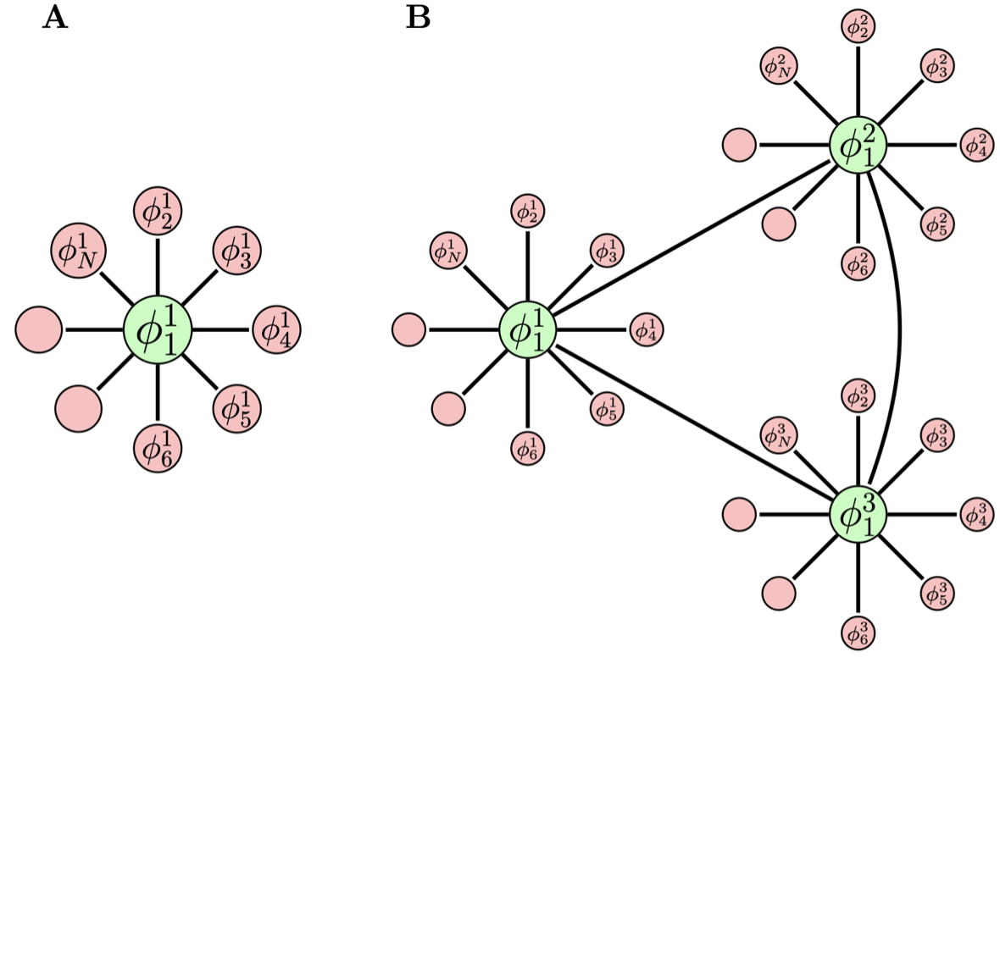

Postdoctoral Fellow, Hebrew University of Jerusalem Israel
[QSP Modeler | Mechanistic Digital Twin Expert | Computational Biophysicist]
Amit Jangid is a Postdoctoral Fellow at the Hebrew University of Jerusalem who specializes in using mathematical and computational modeling—including stochastic simulations and network theory—to solve intricate biological challenges. His research spans the evolution of self-incompatibility systems, gene regulatory networks, disease modeling, cell fate decisions, and complex systems.
Currently, he is investigating the evolutionary mechanisms of S-RNase-based collaborative non-self recognition (CNRS) self-incompatibility in plants.
How structure shapes the allele diversity in self-incompatible
plants
We study the impact of the structure of the self-incompatibility system
on the allele diversity in self-incompatible plants.

Plant mating modes: self-compatibility, self-incompatibility, and
mixed
mode
Addressing the elusive nature of mixed-mating, this study models how
molecular promiscuity and inbreeding depression drive the evolution of plant
self-incompatibility. This study uncover a phase diagram with three regimes: complete
self-incompatibility, self-compatibility, and a newly described mixed mode. This mixed mode is
distinct, characterized by vigorous, non-decaying fluctuations in the proportion of mating types
rather than a static balance. Furthermore, we find that evolutionary transitions between these
modes are often reversible, offering a dynamic new framework for understanding the stability of
diverse plant reproductive strategies. [Jangid A. et al. bioRxiv (2025)]

Reconciling conflicting selection pressures in
self-incompatibility systems
This study investigates how plant
self-incompatibility systems evolve under conflicting pressures to
specifically identify partners while avoiding self-compatibility. This work uncovered that
selection exerts an asymmetric effect, significantly impacting female protein amino acid
composition while leaving male proteins largely unchanged. In a very good agreement with genomic
data, this work offers a generalizable model for analyzing multiple selection pressures in
biological systems. [Jangid A. et al. Phys.
Rev. Res. 7(3) (2025)]

Evolution of small protein - protein interaction networks in
collaorative
non-self recognition (CNSR)
system in plants
To understand how biological networks expand, we modeled the plant collaborative-non-self
recognition self-incompatibility system. Unlike previous approaches, our framework incorporates
interaction promiscuity and multiple protein partners. We show that these factors drive the
population to spontaneously self-organize into distinct compatibility 'classes,' maintaining a
dynamic balance between their emergence and decay. This underscores the importance of molecular
promiscuity in network evolvability and offers a broader framework for similar biological
systems. [Erez K., Jangid A. et al. Nat.
Commun. 15(1) (2024)]

Modeling IFN-$\gamma$ and IL-4 mediated networks in Atopic
Dermatitis
Atopic Dermatitis (AD), an auto-immune skin disease, is mainly
characterized
by an imbalance in Th1 and Th2 populations due to environmental interactions. Many cells and
cytokines
are involved in the pathogenesis of AD. We have modeled the networks of Th1, Th2, dendritic, and
keratinocyte cells mediated by individual two key cytokines (IFN-$\gamma$ and IL-4). In the
model, we
have assumed that cytokines dynamics approach its equilibrium faster than cell dynamics. From
sensitivity analysis, we observed that transitions between acute and chronic states may be
through two
different paths, namely, smooth and abrupt. Depending on the nature of the cytokines, there is a
possibility to drive the system from a bistable phase to the acute state by giving external
stimulus. [Pandey R. et al. Theor. Biol.
556 (2023)]

Stress driven minimal p53 regulatory pathway
We have
constructed a
stress-driven minimal model of the p53 regulatory network. This regulatory network mainly
consists of
active and mutant forms of tumor suppressor gene p53, MDM2, ARF, oncogene, and three different
forms of
stress. The model mainly represents the competition between an active and mutant form of
tumor-suppressor gene p53. Depending on the nature of the external stress, four distinct
dynamical
states of p53 are observed. These dynamical states correspond to active, apoptosis,
pre-malignant, and
cancer states depending on the level of active and mutant p53. Transitions from cancer to any
other
state are found to be irreversible if stress is either oscillatory or constant. In case of
decaying
stress, the apoptotic state vanishes and for low stress, the pre-malignant state is bounded by
two
critical points, allowing the system to transition reversibly from the active to the
pre-malignant
state. For large stress, the two critical points expand, and the system moves to an irreversible
cancerous state. [Jangid A. et al. Sci. Rep. 11(1)
(2021), Zubair M. et al. Brief. Bioinform.
26(1) (2025)]

Nucleus and noise regulating cell fate decision
We
have
built a
population-based stochastic cellular model starting from a single stem cell which divides
stochastically
to give rise to either stem or differentiated cells. The model consists of three main
components:
nucleus position (with and without noise), gene-regulatory network (GRN, mutual inhibition, and
self-activation,) and stochastic segregation of transcription factors into daughter cells. The
model
shows short and non-terminating (long) genealogies similar to those observed in experimental
studies of
neuroblast and B cells. Non-terminating genealogies have non-zero stem cells whereas in every
short-terminated genealogy, the number of stem cells goes to zero (all leaf nodes are
differentiated
cells). We have compared the model with the coarse-grained Markov model, both leading to
bimodal
probability distributions showing good agreement. The model shows that the nucleus's position
towards
the basal leads to more asymmetric division and apical nuclei enhance symmetric division leading
to more
stem cells. Introducing noise in the nucleus position, more differentiated cells are observed
through
symmetric differentiation. [Jangid A. et al. iScience 24(10)
(2021)]

Collective dynamics of coupled NF-$\kappa$B ensembles
We studied
the
collective dynamics of coupled NF-$\kappa$B ensemble in a diffusive environment driven by
TNF-$\alpha$
molecule. The NF-$\kappa$B gene is known to control various essential genes for smooth
functioning
of
cells. In the model, each NF-$\kappa$B module is coupled via TNF-$\alpha$ diffusive molecule
with
some
coupling strength. Through a suitable order parameter, we observed that for some range of
coupling
strength all coupled NF-$\kappa$B modules are desynchronized, and for some range there is
cluster
formation and chimera states -- few modules will have the same dynamics and few will have their
own
dynamics. We also observed complete synchronization of all modules for some range of coupling
strength.
We also studied another case in which there is heterogeneity in the translation of NF-$\kappa$B
and
observed similar behavior.

Following python scrips are common for the collabrative non-self recognition (CNSR) mechanism in S-RNase based self-incompatibility (SI) system in plants.
Initialization
This first script calculates the probabilities of different female mating modes (self-compatible vs
self-incompatible) within a structured population.
Click Expand to load script...Interaction
After calculating the initial probabilities, we run a stochastic simulation to observe how these traits
evolve over many generations. Here is the demo simulation logic:
Click Expand to load script...This project explores the transitions among different plant mating modes, and the dynamics and stability of mixed-mating states.
Click Expand to load script...I am open to collaborations in quantitative biology.
Email: amitjangid050@gmail.com
Address:
Room No. 106, Department of Plant Sciences and Genetics
The Robert H. Smith Faculty of Agriculture, Food and Environment
Hebrew University of Jerusalem, Rehovot, Israel